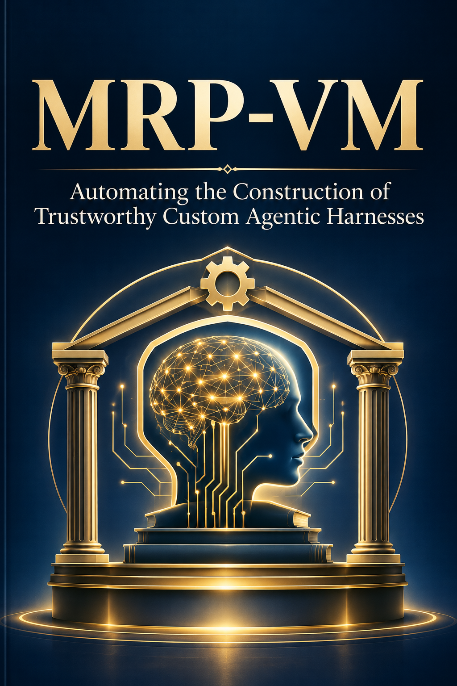

Technology · Axiologic Research Editions
MRP-VM
Trustworthy Custom Agentic Harnesses
A production agent cannot be a prompt plus a tool loop. It needs a pinned capability definition, admissible sources, explicit tool permissions, qualification gates, an operational trace and a rollback target.
The engineering gap: repeatable work
MRP-VM starts where much agent rhetoric stops. A fluent answer is not yet a dependable capability: it has no declared scope, no stable procedure, no owner, no testable interface and no account of what should happen when it fails. The book calls the missing engineering layer a custom agentic harness. It is the versioned environment in which a model, tools, sources, permissions, output contracts, human gates and evaluation criteria are deliberately assembled for a defined kind of work.
This is a case for specialisation without nostalgia for rigid automation. General models retain their breadth; the harness gives their use a purpose, a working memory and a boundary. MRP-VM is not presented as a foundation model, universal agent or compliance certificate. It is a runtime and design vocabulary for the difficult middle ground: tasks frequent enough to justify a maintained method, variable enough to require semantic judgment, and consequential enough to require evidence, review or controlled action.
Its central unit is the Agentic Knowledge Unit (AKU). An AKU is more than a prompt: it packages a capability’s interface, resources, provenance, tests, expected failure modes, qualification requirements and ownership under a portable, revisable address. A request runs under a pinned capability and settings generation. Selection chooses a small relevant working set; planning exposes responsibilities and dependencies; each step receives bounded context and authority. Outputs remain provisional until qualified. Effects, retries, revisions and stopping conditions become part of an operational trace rather than folklore about how the agent behaved.
What the runtime has to make explicit
Why not simply use the best available model? Better models improve interpretation, but they do not decide which sources are authoritative, which actions are admissible or what evidence is needed before publication. MRP-VM separates the model from the governed runtime so a model may be changed and evaluated without silently redefining the system’s obligation.
What makes an agentic harness trustworthy? The book treats trust as an evidence-backed claim about a socio-technical system in its actual context, not a score attached to a model. Qualification, human oversight, auditability, privacy, resilience and explicit limits must be visible in the execution path. A narrow intended purpose can be a safety feature, because it permits stronger source restrictions, exact tools and meaningful regression tests.
Can the system improve itself without becoming ungovernable? Candidate capabilities and revisions can be authored in a separate workspace, evaluated against a baseline and published as coherent generations with rollback. The book’s point is not to automate approval away, but to automate portions of construction while preserving the places where authority must decide.
A capability becomes dependable when the reasons for using it are part of the thing that runs.
A deployment model, not a model claim
The book’s underlying Meta-Rational Pragmatics is less opaque than its name suggests: it is an insistence that language activity must be connected to explicit dependencies, effects and conditions of use. This produces a practical architecture: plans are not merely narrated; resources are not merely mentioned; exact subproblems go to exact tools; a result is not accepted because the system finds it plausible. Chapters on evidence, candidate capabilities, evaluation, versioning and publication turn that discipline into an adoption path rather than a distant theory.
For operations, research, software and regulated work, anywhere “it usually works” cannot be an acceptable handover, MRP-VM names the missing discipline. Alongside AssistOS and Executable Natural Language, it completes a larger argument: an operating layer for AI work, a way to check semantic claims, and the harness that keeps recurring model-mediated work inspectable between them.